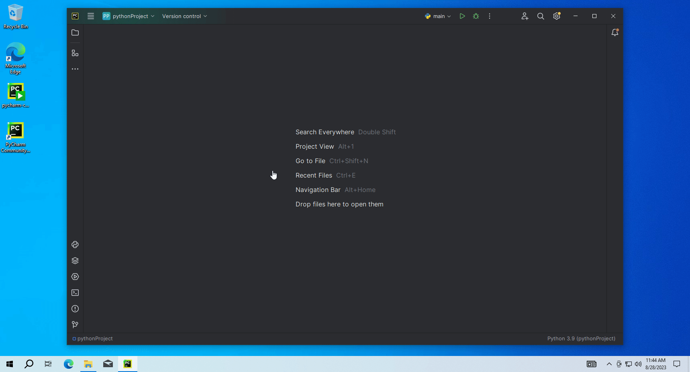
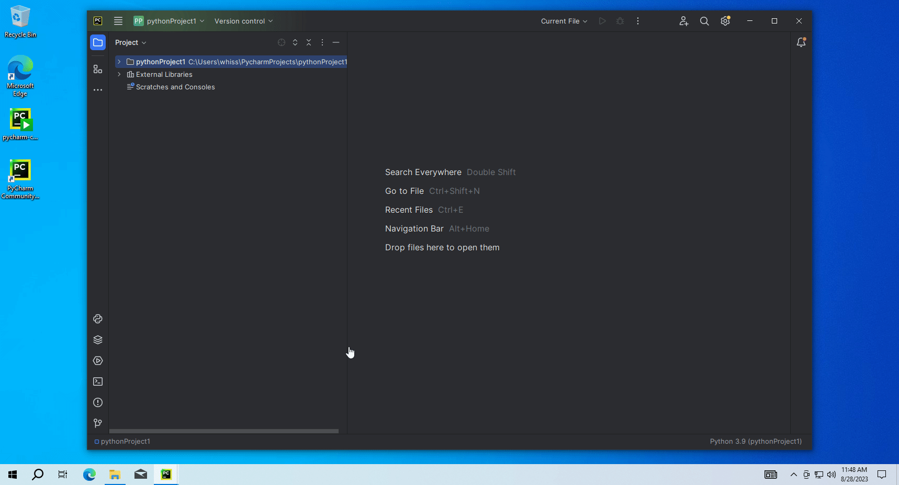
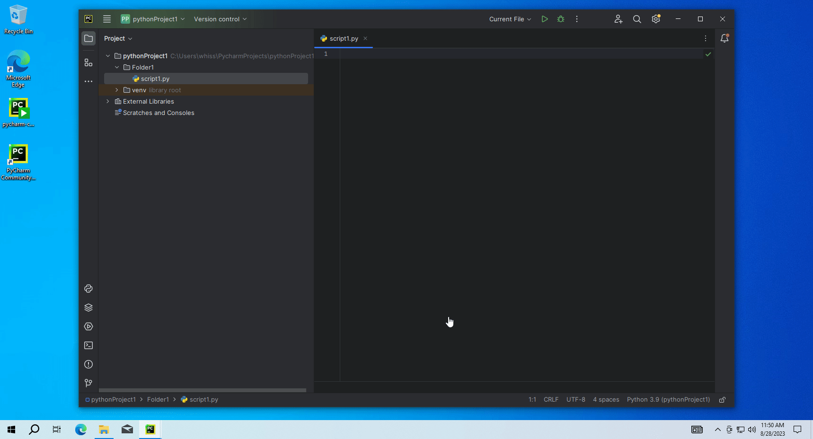
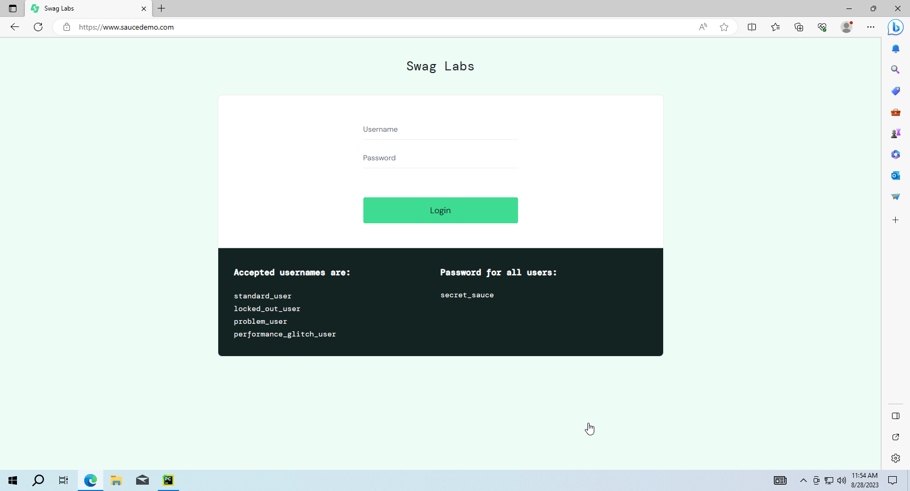

Python is a high-level, general-purpose programming language
Python is designed with the strong advantage of being easy to read, learn and remember, clear structure, convenient for beginners and easy to learn programming language.
No ";" at the end of the command.
-> Python uses whitespace indentation, rather than curly brackets or keywords, to delimit blocks.
Croll down to the end of the page, and choose PyCharm Community Edition.
Install.
Click to "Create desktop shorcut"(optional), and "add bin folder to the PATH"(recommended).
Reboot.
III. Create a project.
Create a new project:
Open Pycharm.
File -> New project.
Choose project location in the Location field.
Choose "Virtualenv" in enviroinment field.
Uncheck Create a main.py (optional).
Click Create.

Create a file or folder:
In the Project explorer, right mouse to the project -> New
Directiory: create a contain folder.
Python file: create a Python script file.

IV. Selenium framework.
Selenium is a free, open-source test automation framework that can help us test an application across different platforms and browsers.
To run automation test, we need to install Selenium:
Click on "Python Package" at the bottom.
A tab is appear, type "selenium" to the search field.
Click on selenium and click Install at the right.

V. Extract WebElement attributes.
Web page components such as text boxes, checkboxes, buttons, drop-downs, radio buttons, web forms, etc. are called web elements. These can be identified by attributes like id, classname, name, or XPath.
To run automation test, we need to locate general locators or XPath.
1. Locators in Selenium.
Open the Devtool by press F12, use inspect tool to locate the web components which you want to work on it.
You can see all attributes of web elements like id, classname, name, etc..
In Selenium automation, if the elements are not found by the general locators like id, class, name, etc. then XPath is used to find an element on the web page.
You can easy to get a XPath by using inspect tool, then right click to the web components and choose Copy -> Copy Xpath.

Sometime, attributes of the components can be changed position, so tip above may not stable.
In this xpath, maybe it contains no id, or many div tags, and position symbols [0], [1],... If in the future, the value we really want to get is swapped with a new value. The value is different, that will lead to an incorrect result.